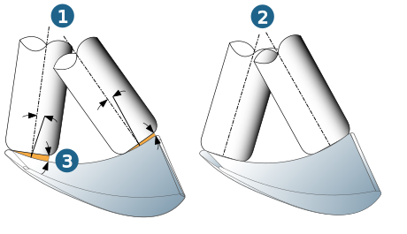
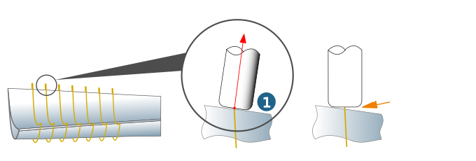

5-axis parameters
Lead angle control
Lead angle: Angle of inclination of the tool to the surface in the infeed direction. Small values for the lead angle enable larger distances between paths. Setting a higher value ensures that the tool does not collide with the blade surface on the concave blade side.
Automatic control: This function prevents collisions with the back face of the milling tool in concave blade areas by automatically increasing the specified lead angle. If the Automatic control function is disabled, the calculation is cancelled if the tool needs to cut at the specified lead angle using the rear side.
Constant: Use this option to calculate a lead angle separately for each individual path on the suction and pressure side that can be maintained unchanged across the entire path (1).
Variable: Use this option to calculate the best fit of the tool to the surface(s) at all points on the path (2).
Free angle (3): Defines the minimum angle to be maintained between the underside of the tool and the blade surface being machined. This function makes it possible to specify a smaller lead angle for machining highly concave blade surfaces, resulting in greater distances between paths.
|  |
Tilt angle control: Additional slope angle (1) to the side surfaces. This is important if there is a larger allowance present on the hub surface. The turbine blade can be machined close to the hub without touching the hub surface.
Normally a tilt angle of 0 degrees is used for calculation. To ensure better milling conditions, a smaller angle-value can be defined.
Use the Tangential at edge option to orient the tool in the direction of the edge normals (1). This ensures that the path on the blade surfaces and the path around the edges (leading and trailing edge) are tangentially connected with one another, leading to an optimized edge shape with lower scallop height.
|  |
Toolpath smoothing
Use drive surfaces: The user can control the movement of the tool (primarily its orientation) using the drive surfaces by defining smoother surfaces with continuous seamless transitions. Starting from the tool position in the drive surface, the tool is then retracted to the top of the model (3df).
Additional axial distance : If the distance of the drive surfaces to the original blade surfaces is greater than the corner radius of the tool, the tool no longer touches the blade surfaces at this point. A message is output during the calculation. In this case, the axial position of the tool must be corrected by a negative value - into the blade - (from where the tool is then retracted to the top).
Tilt smoothing: A local erratic change to the rotary movement of the tool around the Z axis is smoothed locally.
Internal surface interpolation : hyperMILL calculates a separate drive surface for the pressure and suction side, which is used to optimize the movement of the tool, based on the values you specified for the Number of slices and the Number of points per side.
The stronger the blade is twisted along the X axis and/or the stronger the edges are curved, the more cuts are needed.
The number of points per cut controls the accuracy with which the aerodynamic profile of the blade surfaces is approached. The more non-symmetrical the profile curvature in the suction and pressure side (in particular for extreme curvatures near the edges), the greater the number of points per cut. The number of points does not affect the accuracy of the output.
Retraction on collision
Distance control: It is preferable to use this option if geometries are to be skipped on the blade surfaces in rapid movement mode. The Max. distance parameter defines the maximum axial retraction from the blade surfaces at which the milling tool remains in working feedrate.
Feedrate control
Feedrate control: You should activate this option to compensate excessive machine axis acceleration on the edges of the blade surfaces.
Feedrate reference distance (1): Distance of a reference point on the tool axis to the tool center point for which the specified working feedrate applies.
The feedrate output is determined based on the ratio of the paths travelled by the tool reference point, on the one hand, and the point on the tool axis that is moved, on the other hand. For concave surfaces, a smaller working feedrate is therefore output automatically for every point.
 |